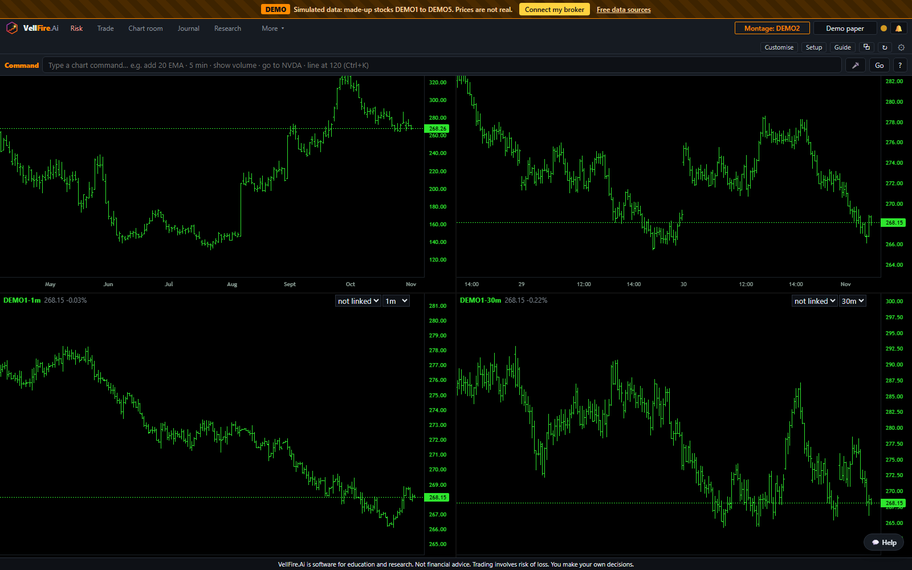
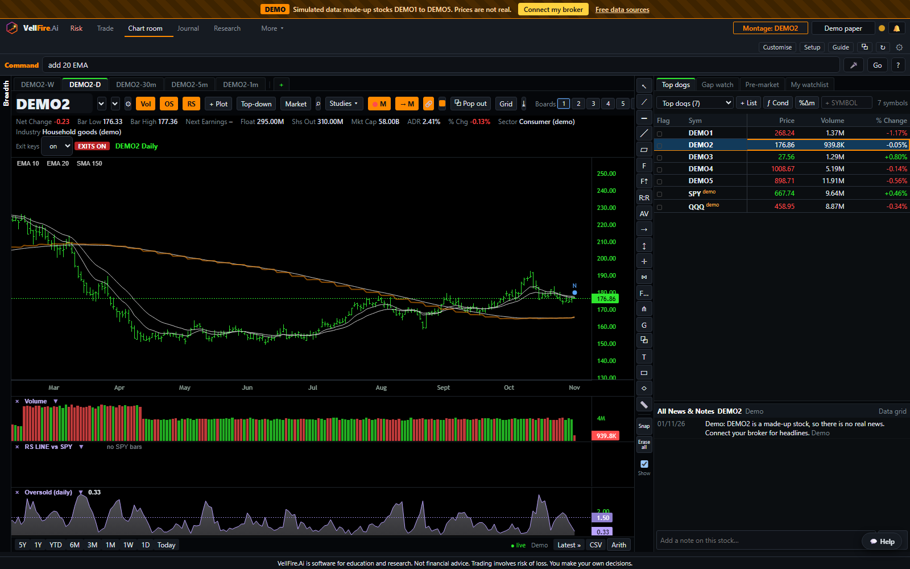
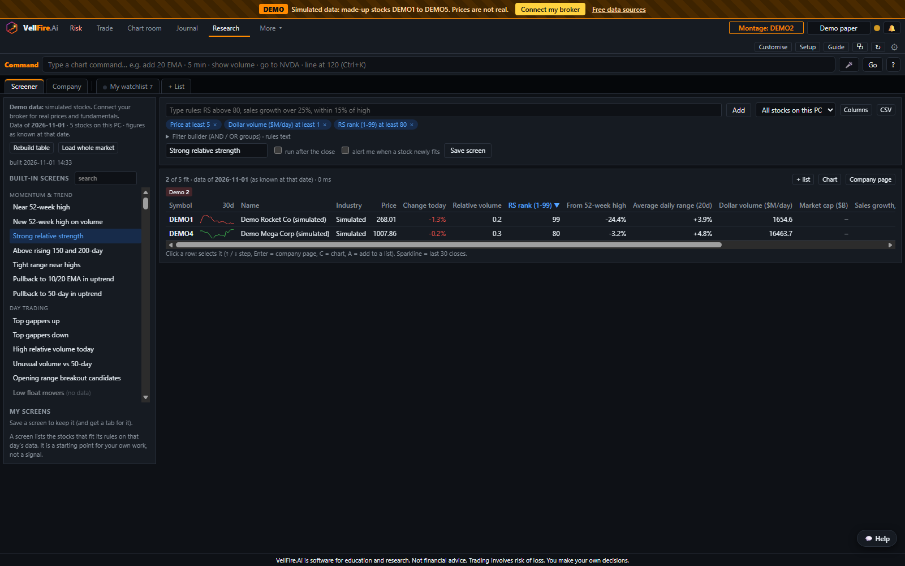
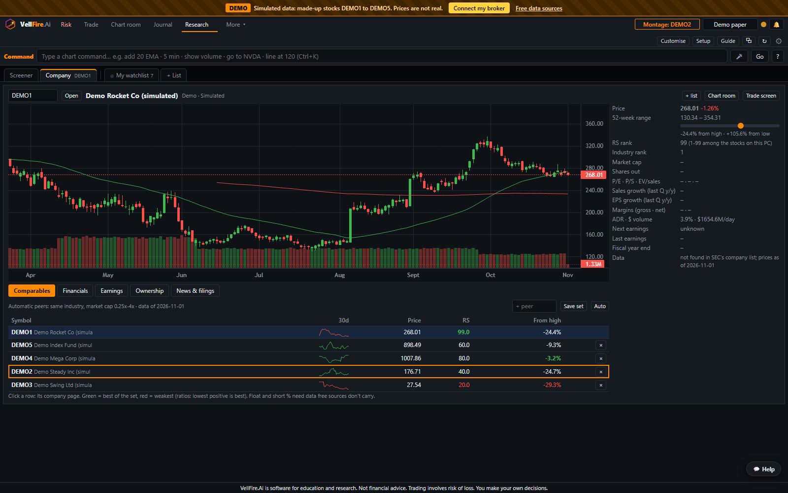
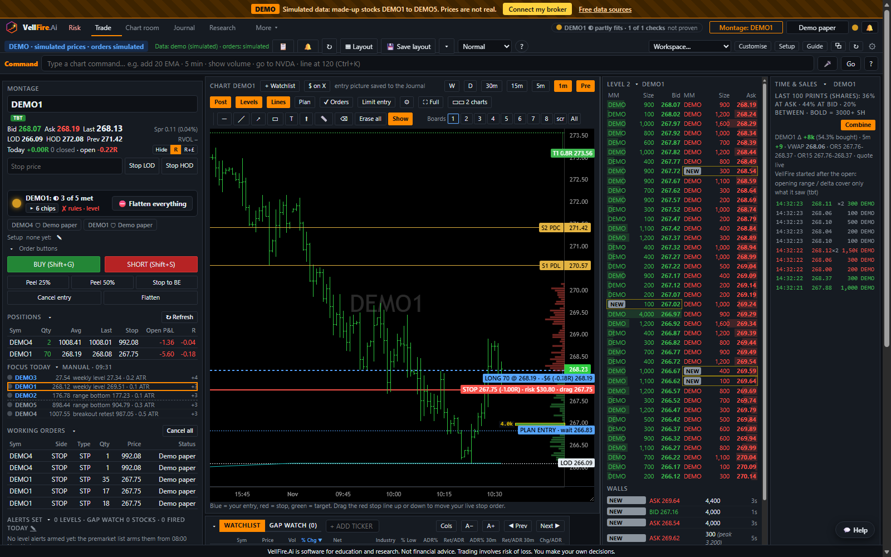
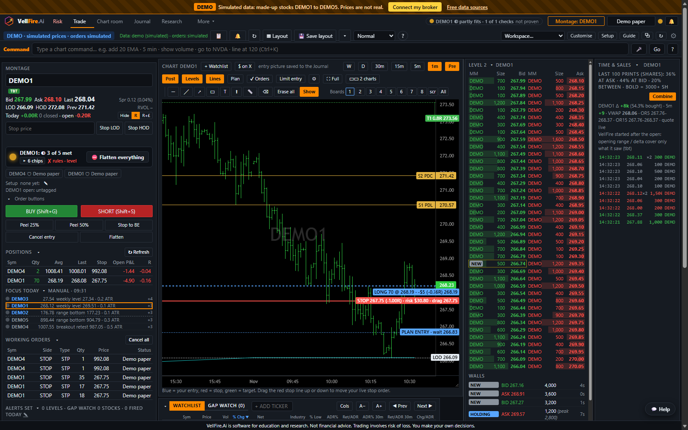
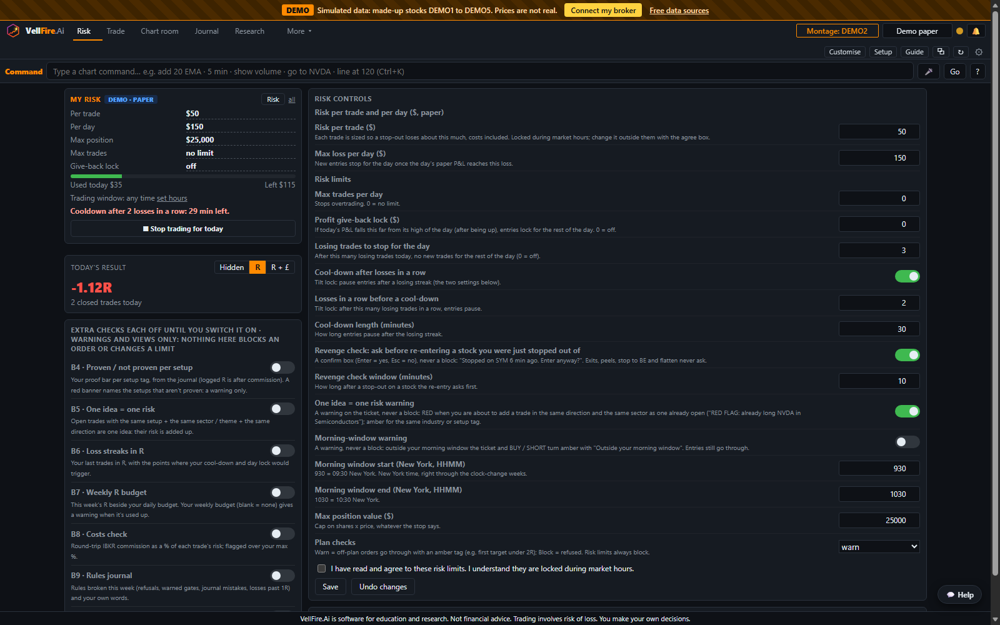
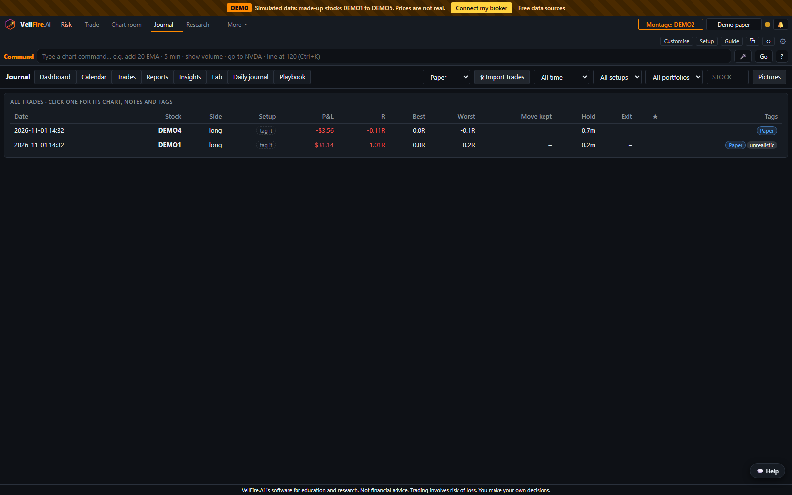

VellFire Basic has five working tabs plus Setup. Every screenshot uses demo data with fictional stocks.
VellFire is trading software, not financial advice. It never tells you what to buy or sell. Trading carries a risk of loss, and you can lose more than you expect. Read the risk warning
Charts built your way, with scans and watchlists alongside.


Find stocks and check the numbers without leaving the desk.
The screener's data fields depend on your data connection. [CONFIRM] which fundamentals and news sources Basic uses.


Order entry that starts from your stop.
In the beta, orders are paper trades: real prices, simulated fills. Live trading with your own IBKR account from launch.


Limits you set when you're calm, which hold when you're not.

Every trade recorded, reviewed and ready for tax time.
The tax export is a record of your trades to help you or your accountant. It is not tax advice. Check the figures before you file.


Connect, choose a theme, get help.
Download VellFire, connect your data or start on demo data, and set your first risk limits in a few minutes.
⬇ Download for Windows